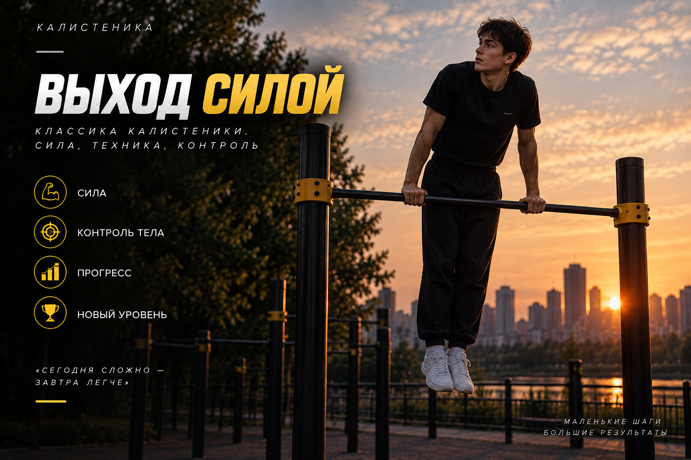
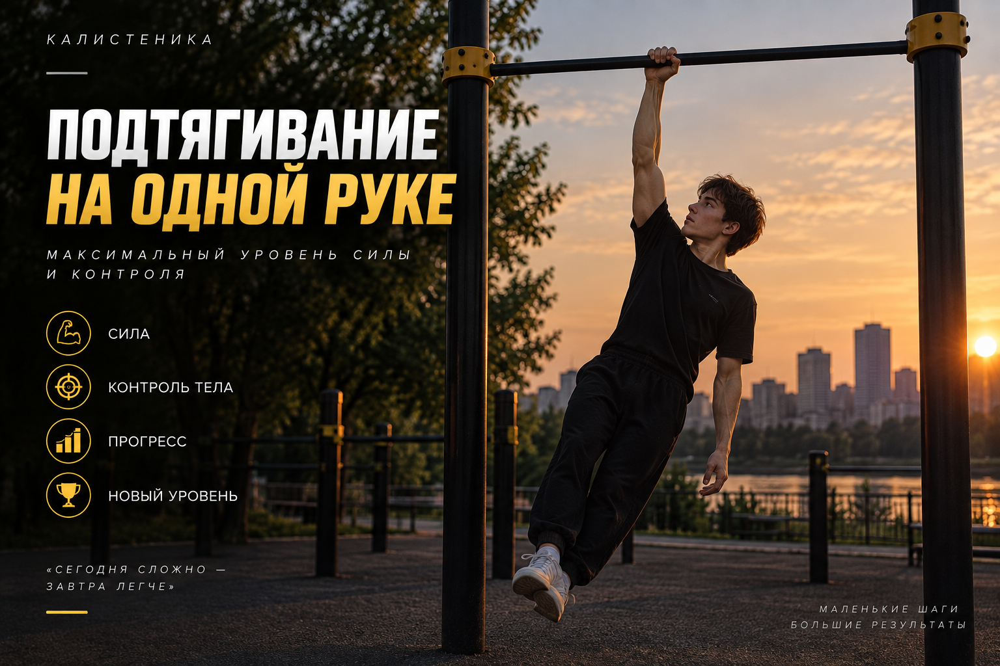

ТЕКУЩАЯ ЦЕЛЬ0%
Выход силой
Сила · техника · контроль

Сила · техника · контроль
Около 30 минут
Скопируй отчёт и пришли его мне в чат.

Эта вкладка уже оформлена. Тренировочная программа появится здесь после текущего этапа с выходом силой.